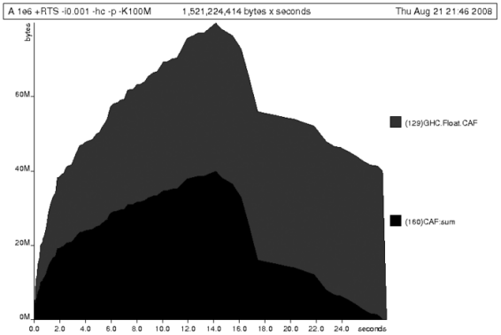
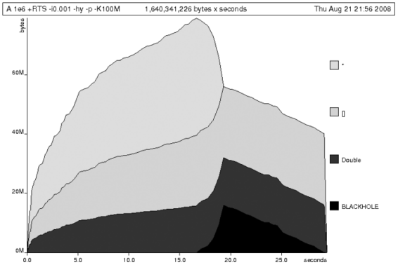
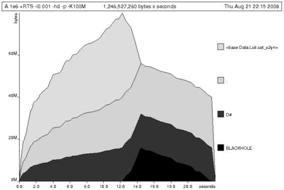

{% include JB/setup %}
{% raw %}
<div>

    <a name="toppage" class="calibre5" id="toppage"></a>
    <table width="100%" border="0" cellspacing="0" cellpadding="0" class="sfbody">
      <tr valign="top" class="calibre6">
        <td class="calibre7">
          <a name="MainContent" class="calibre5" id="MainContent"></a>
          <table width="95%" class="sfbody">
            <tr class="calibre6">
              <td class="v">
                <!--Copyright (c) 2002 Safari Tech Books Online-->
                <table width="100%" border="0" cellspacing="0" cellpadding="2" class="sfbody">
                  <tr class="calibre6">
                    <td valign="middle" class="v1" height="5">
                      
                    </td>
                  </tr>
                  <tr class="calibre6">
                    <td valign="middle" class="v1">
                      <table cellpadding="0" cellspacing="0" border="0" width="100%" class="sfbody">
                        <tr class="calibre6">
                          <td class="v"><span class="calibre9"> </span>
                   
                  <span class="calibre9">   </span>
             <span class="calibre9"> </span></td>
                        </tr>
                      </table>
                    </td>
                    <td class="v1"/>
                    <td valign="middle" class="v2"><a href="21061538.html" class="calibre13"></a> 
           
          <span class="calibre9"><a target="_self" href="profiling_split_000.html" title="Previous section" class="calibre13"></a></span>
				
				 
				
				<span class="calibre9"><a target="_self" href="I_sect125_d1e48856.html" title="Next section" class="calibre13"></a></span></td>
                  </tr>
                </table>
                <div id="section" class="calibre15">
                  <table width="100%" border="0" cellspacing="0" cellpadding="0" class="sfbody1">
                    <tr class="calibre16">
                      <td valign="top" class="v3">Safari IT Books Language Constructs Functional Programming Haskell Safari IT Books Programming Programming Programming Bryan O'Sullivan  Donald Bruce Stewart  John Goerzen  O'Reilly Media, Inc. Real World Haskell, 1st Edition<a name="I_sect125_d1e48477" class="calibre27" id="I_sect125_d1e48477"></a><h3 id="643999-883" class="docSection1Title">25.1. Profiling Haskell Programs</h3><a name="x_tJ1" class="calibre27" id="x_tJ1"></a><p class="docText">Let's consider<a name="I_indexterm25_d1e48483" class="calibre27" id="I_indexterm25_d1e48483"></a> the following list manipulating program, which naively
    computes the mean of some large list of values. While only a program
    fragment (and we'll stress that the particular algorithm we're
    implementing is irrelevant here), it is representative of real code that
    we might find in any Haskell program: typically concise list manipulation
    code and heavy use of standard library functions. It also illustrates
    several common performance trouble spots that can catch the unwary:</p><pre class="calibre39">-- file: ch25/A.hs
import System.Environment
import Text.Printf

main = do
    [d] &lt;- map read `fmap` getArgs
    printf "%f\n" (mean [1..d])

mean :: [Double] -&gt; Double
mean xs = sum xs / fromIntegral (length xs)</pre><br class="calibre48"/>
<a name="x_uJ1" class="calibre27" id="x_uJ1"></a><p class="docText">This program is very simple. We import functions for
    accessing the system's environment (in particular, <i class="docEmphasis">getArgs</i>), and the Haskell version<a name="I_indexterm25_d1e48495" class="calibre27" id="I_indexterm25_d1e48495"></a> of <i class="docEmphasis">printf</i>, for
    formatted text output. The program then reads a numeric literal from the
    command line, using that to build a list of floating-point values, whose
    mean value we compute by dividing the list sum by its length. The result
    is printed as a string. Let's compile this source to native code (with
    optimizations on) and run it with the <tt class="calibre34">time</tt> command to see how
    it performs:</p><pre class="calibre39">$ <b class="calibre40">ghc --make -O2 A.hs</b>
[1 of 1] Compiling Main             ( A.hs, A.o )
Linking A ...
$ <b class="calibre40">time ./A 1e5</b>
50000.5
./A 1e5  0.05s user 0.01s system 102% cpu 0.059 total
$ <b class="calibre40">time ./A 1e6</b>
500000.5
./A 1e6  0.26s user 0.04s system 99% cpu 0.298 total
$ <b class="calibre40">time ./A 1e7</b>
5000000.5
./A 1e7  63.80s user 0.62s system 99% cpu 1:04.53 total</pre><a name="x_vJ1" class="calibre27" id="x_vJ1"></a><p class="docText">It worked well for small numbers, but the program really
    started to struggle with a list size of 10 million. From this alone, we
    know something's not quite right, but it's unclear what resources are
    being used. Let's investigate.</p><a name="I_sect125_d1e48477d1e48805" class="calibre27" id="I_sect125_d1e48477d1e48805"></a><h4 id="title-IDAKU3NB" class="docSection1Title">25.1.1. Collecting Runtime Statistics</h4><a name="x_wJ1" class="calibre27" id="x_wJ1"></a><p class="docText">To get access to<a name="I_indexterm25_d1e48534" class="calibre27" id="I_indexterm25_d1e48534"></a> that kind of information, GHC lets us pass flags directly
      to the Haskell runtime, using the special <tt class="calibre34">+RTS</tt> and
      <tt class="calibre34">-RTS</tt> flags<a name="I_indexterm25_d1e48544" class="calibre27" id="I_indexterm25_d1e48544"></a><a name="I_indexterm25_d1e48547" class="calibre27" id="I_indexterm25_d1e48547"></a> to delimit arguments reserved for the runtime system. The
      application itself won't see those flags, as they're immediately
      consumed by the Haskell runtime system.</p><a name="x_xJ1" class="calibre27" id="x_xJ1"></a><p class="docText">In particular, we can ask the runtime system to gather
      memory and garbage collector performance numbers with the
      <tt class="calibre34">-s</tt> flag <a name="I_indexterm25_d1e48556" class="calibre27" id="I_indexterm25_d1e48556"></a>(as well as control the number of OS threads with
      <tt class="calibre34">-N</tt> or tweak the stack and heap sizes). We'll also use
      runtime flags to enable different varieties of profiling. The complete
      set of flags the Haskell runtime accepts is documented in the <a class="docLink" target="_blank" href="http://www.haskell.org/ghc/docs/latest/html/users_guide/">GHC
      User's Guide</a>.</p><a name="x_yJ1" class="calibre27" id="x_yJ1"></a><p class="docText">So let's run the program with statistic reporting
      enabled, via <tt class="calibre34">+RTS -sstderr</tt>, yielding<a name="I_indexterm25_d1e48571" class="calibre27" id="I_indexterm25_d1e48571"></a> this result:</p><pre class="calibre39">$ <b class="calibre40">./A 1e7 +RTS -sstderr</b>
./A 1e7 +RTS -sstderr 
5000000.5
1,689,133,824 bytes allocated in the heap
697,882,192 bytes copied during GC (scavenged)
465,051,008 bytes copied during GC (not scavenged)
382,705,664 bytes maximum residency (10 sample(s))

       3222 collections in generation 0 (  0.91s)
         10 collections in generation 1 ( 18.69s)

        742 Mb total memory in use

  INIT  time    0.00s  (  0.00s elapsed)
  MUT   time    0.63s  (  0.71s elapsed)
  GC    time   19.60s  ( 20.73s elapsed)
  EXIT  time    0.00s  (  0.00s elapsed)
  Total time   20.23s  ( 21.44s elapsed)

  %GC time      96.9%  (96.7% elapsed)

  Alloc rate    2,681,318,018 bytes per MUT second

  Productivity   3.1% of total user, 2.9% of total elapsed
</pre><a name="x_zJ1" class="calibre27" id="x_zJ1"></a><p class="docText">When using <tt class="calibre34">-sstderr</tt>, our program's
      performance numbers are printed to the standard error stream, giving us
      a lot of information about what our program is doing. In particular, it
      tells us how much time was spent in garbage collection and what the
      maximum live memory usage was. It turns out that to compute the mean of
      a list of 10 million elements, our program used a maximum of 742
      megabytes on the heap, and spent 96.9% of its time doing garbage
      collection! In total, only 3.1% of the program's running time was spent
      doing productive work.</p><a name="x_AK1" class="calibre27" id="x_AK1"></a><p class="docText">So why is our program behaving so badly, and what can
      we do to improve it? After all, Haskell is a lazy language—shouldn't it
      be able to process the list in constant space?</p><a name="I_sect125_d1e48477d1e48864" class="calibre27" id="I_sect125_d1e48477d1e48864"></a><h4 id="title-IDAUW3NB" class="docSection1Title">25.1.2. Time Profiling</h4><a name="x_BK1" class="calibre27" id="x_BK1"></a><p class="docText">Thankfully, GHC comes with several tools to analyze a
      program's time and space usage. In particular, we can compile a program
      with profiling enabled, which, when run yields useful information about
      what resources each function is using. Profiling proceeds in three
      steps: compile the program for profiling, run it with particular
      profiling modes enabled, and inspect the resulting statistics.</p><a name="x_CK1" class="calibre27" id="x_CK1"></a><p class="docText">To compile our program for basic time and allocation
      <a name="I_indexterm25_d1e48595" class="calibre27" id="I_indexterm25_d1e48595"></a>profiling, we use the <tt class="calibre34">-prof</tt> flag. We also
      need to tell the profiling code which functions we're interested in
      profiling, by adding <span class="docEmphasis">cost centers</span> to them. A cost
      center is a location in the program we'd like to collect statistics
      about. GHC will generate code to compute the cost of evaluating the
      expression at each location. Cost centers can be added manually to
      instrument any expression, using the <tt class="calibre34">SCC</tt> pragma:</p><pre class="calibre39">-- file: ch25/SCC.hs
mean :: [Double] -&gt; Double
mean xs = {-# SCC "mean" #-} sum xs / fromIntegral (length xs)</pre><br class="calibre48"/>
<a name="x_DK1" class="calibre27" id="x_DK1"></a><p class="docText">Alternatively, we can have the compiler insert the cost
      centers on all top-level functions for us by compiling with the
      <tt class="calibre34">-auto-all</tt> flag. <a name="I_indexterm25_d1e48615" class="calibre27" id="I_indexterm25_d1e48615"></a>Manual cost centers are a useful addition to automated
      cost-center profiling, as once a hot spot is been identified, we can
      precisely pin down the expensive subexpressions of a function.</p><a name="x_EK1" class="calibre27" id="x_EK1"></a><p class="docText">One complication to be aware of is that in a lazy, pure
      language such as Haskell, values with no arguments need only be computed
      once (for example, the large list in our example program), and the
      result shared for later uses. Such values are not really part of the
      call graph of a program, as they're not evaluated on each call, but we
      would of course still like to know how expensive their one-off cost of
      evaluation was. To get accurate numbers for these values, known
      <a name="I_indexterm25_d1e48621" class="calibre27" id="I_indexterm25_d1e48621"></a><a name="I_indexterm25_d1e48624" class="calibre27" id="I_indexterm25_d1e48624"></a>as <span class="docEmphasis">constant applicative forms</span> (CAFs),
      we use the <tt class="calibre34">-caf-all</tt> flag.</p><a name="x_FK1" class="calibre27" id="x_FK1"></a><p class="docText">Compiling our example program for profiling then (using
      the <tt class="calibre34">-fforce-recomp</tt> flag to force full
      recompilation):</p><pre class="calibre39">$ <b class="calibre40">ghc -O2 --make A.hs -prof -auto-all -caf-all -fforce-recomp</b>
[1 of 1] Compiling Main             ( A.hs, A.o )
Linking A ...
</pre><a name="x_GK1" class="calibre27" id="x_GK1"></a><p class="docText">We can now run this annotated program with time
      profiling enabled (and we'll use a smaller input size for the time
      being, as the program now has additional profiling <span class="docEmphasis">overhead</span>):</p><pre class="calibre39">$ <b class="calibre40">time ./A  1e6 +RTS -p</b>
Stack space overflow: current size 8388608 bytes.
Use `+RTS -Ksize' to increase it.
./A 1e6 +RTS -p  1.11s user 0.15s system 95% cpu 1.319 total
</pre><a name="x_HK1" class="calibre27" id="x_HK1"></a><p class="docText">The program ran out of stack space! This is the main
      complication to be aware of when using profiling: adding cost centers to
      a program modifies how it is optimized, possibly changing its runtime
      behavior, as each expression now has additional code associated with it
      to track the evaluation steps. In a sense, observing the program that is
      executing modifies how it executes. In this case, it is simple to
      proceed—we use the GHC runtime flag, <tt class="calibre34">-K</tt>, to set a larger
      stack limit for our program (with the usual suffixes to indicate
      magnitude):</p><pre class="calibre39">$ <b class="calibre40">time ./A 1e6 +RTS -p -K100M</b>
500000.5
./A 1e6 +RTS -p -K100M  4.27s user 0.20s system 99% cpu 4.489 total
</pre><a name="x_IK1" class="calibre27" id="x_IK1"></a><p class="docText">The runtime will dump its profiling information into a
      file, <i class="docEmphasis">A.prof</i> (named after the binary that was
      executed), which contains the following information:</p><pre class="calibre39">Time and Allocation Profiling Report  (Final)

	   A +RTS -p -K100M -RTS 1e6

	total time  =        0.28 secs   (14 ticks @ 20 ms)
	total alloc = 224,041,656 bytes  (excludes profiling overheads)

COST CENTRE  MODULE               %time %alloc

CAF:sum      Main                  78.6   25.0
CAF          GHC.Float             21.4   75.0

                                            individual    inherited
COST CENTRE MODULE         no.    entries  %time %alloc   %time %alloc

MAIN        MAIN            1           0   0.0    0.0   100.0  100.0
 main       Main          166           2   0.0    0.0     0.0    0.0
  mean      Main          168           1   0.0    0.0     0.0    0.0
 CAF:sum    Main          160           1  78.6   25.0    78.6   25.0
 CAF:lvl    Main          158           1   0.0    0.0     0.0    0.0
  main      Main          167           0   0.0    0.0     0.0    0.0
 CAF        Numeric       136           1   0.0    0.0     0.0    0.0
 CAF        Text.Read.Lex 135           9   0.0    0.0     0.0    0.0
 CAF        GHC.Read      130           1   0.0    0.0     0.0    0.0
 CAF        GHC.Float     129           1  21.4   75.0    21.4   75.0
 CAF        GHC.Handle    110           4   0.0    0.0     0.0    0.0</pre><a name="x_JK1" class="calibre27" id="x_JK1"></a><p class="docText">This gives us a view into the program's runtime
      behavior. We can see the program's name and the flags we ran it with.
      The <span class="docEmphasis">total time</span> is time actually spent executing
      code from the runtime system's point of view, and the <span class="docEmphasis">total
      allocation</span> is the number of bytes allocated during the entire
      program run (not the maximum live memory, which is around 700
      MB).</p><a name="x_KK1" class="calibre27" id="x_KK1"></a><p class="docText">The second section of the profiling report is the
      proportion of time and space each function was responsible for. The
      third section is the cost center report, structured as a call graph (for
      example, we can see that <i class="docEmphasis">mean</i> was
      called from <i class="docEmphasis">main</i>). The "individual"
      and "inherited" columns give us the resources a cost center was
      responsible for on its own, and what it and its children were
      responsible for. Additionally, we see the one-off costs of evaluating
      constants (such as the floating-point values in the large list and the
      list itself) assigned to top-level CAFs.</p><a name="x_LK1" class="calibre27" id="x_LK1"></a><p class="docText">What conclusions can we draw from this information? We
      can see that the majority of time is spent in two CAFs, one related to
      computing the sum and another for floating-point numbers. These alone
      account for nearly all allocations that occurred during the program run.
      Combined with our earlier observation about garbage collector stress, it
      begins to look like the list node allocations, containing floating-point
      values, are causing a problem.</p><a name="x_MK1" class="calibre27" id="x_MK1"></a><p class="docText">For simple performance hot spot identification,
      particularly in large programs where we might have little idea where
      time is being spent, the initial time profile can highlight a particular
      problematic module and top-level function, which is often enough to
      reveal the trouble spot. Once we've narrowed down the code to a
      problematic section, such as our example here, we can use more
      sophisticated profiling tools to extract more information.</p><a name="I_sect125_d1e48477d1e48972" class="calibre27" id="I_sect125_d1e48477d1e48972"></a><h4 id="title-IDAY03NB" class="docSection1Title">25.1.3. Space Profiling</h4><a name="x_NK1" class="calibre27" id="x_NK1"></a><p class="docText">Beyond basic time and allocation statistics, GHC is
      able to generate graphs of memory usage of the heap, over the program's
      lifetime. This is perfect for revealing <span class="docEmphasis">space
      leaks</span>, where<a name="I_indexterm25_d1e48704" class="calibre27" id="I_indexterm25_d1e48704"></a> memory is retained unnecessarily, leading to the kind of
      heavy garbage collector activity we see in our example.</p><a name="x_OK1" class="calibre27" id="x_OK1"></a><p class="docText">Constructing a heap profile follows the same procedure
      as constructing a normal time profile—namely, compile with <tt class="calibre34">-prof
      -auto-all -caf-all</tt>. But, when we execute the program, we'll ask
      the runtime system to gather more detailed heap use statistics. We can
      break down the heap use information in several ways: via cost center,
      via module, by constructor, or by data type. Each has its own insights.
      Heap profiling <i class="docEmphasis">A.hs</i> logs to a file
      <i class="docEmphasis">A.hp</i>, with raw data that is in turn processed by
      the tool <tt class="calibre34">hp2ps</tt>, which generates a PostScript-based,
      graphical visualization of the heap over time.</p><a name="x_PK1" class="calibre27" id="x_PK1"></a><p class="docText">To extract a standard heap profile from our program, we
      run it with the <tt class="calibre34">-hc</tt> runtime <a name="I_indexterm25_d1e48727" class="calibre27" id="I_indexterm25_d1e48727"></a>flag:</p><pre class="calibre39">$ <b class="calibre40">time ./A 1e6 +RTS -hc -p -K100M</b>
500000.5
./A 1e6 +RTS -hc -p -K100M  4.15s user 0.27s system 99% cpu 4.432 total
</pre><a name="x_QK1" class="calibre27" id="x_QK1"></a><p class="docText">A heap profiling log, <i class="docEmphasis">A.hp</i>, was
      created, with the content in the following form:</p><pre class="calibre39">JOB "A 1e6 +RTS -hc -p -K100M"
SAMPLE_UNIT "seconds"
VALUE_UNIT "bytes"
BEGIN_SAMPLE 0.00
END_SAMPLE 0.00
BEGIN_SAMPLE 0.24
(167)main/CAF:lvl   48
(136)Numeric.CAF    112
(166)main   8384
(110)GHC.Handle.CAF 8480
(160)CAF:sum    10562000
(129)GHC.Float.CAF  10562080
END_SAMPLE 0.24</pre><a name="x_RK1" class="calibre27" id="x_RK1"></a><p class="docText">Samples are taken at regular intervals during the
      program run. We can increase the heap sampling frequency using
      <tt class="calibre34">-iN</tt>, where <tt class="calibre34">N</tt> is the number of seconds
      (e.g., 0.01) between heap size samples. Obviously, the more we sample,
      the more accurate the results, but the slower our program will run. We
      can now render the heap profile as a graph, using the <tt class="calibre34">hp2ps</tt>
      tool:</p><pre class="calibre39">          $ 
          <b class="calibre40">hp2ps -e8in -c A.hp</b></pre><a name="x_SK1" class="calibre27" id="x_SK1"></a><p class="docText">This produces the graph, in the file
      <i class="docEmphasis">A.ps</i> shown in <a class="docLink" href="#heapprofile">Figure 25-1</a>.</p><a name="heapprofile" class="calibre27" id="heapprofile"></a><p class="calibre37"><div class="calibre61"><h5 class="docTableTitle">Figure 25-1. The heap profile graph rises in a gently decreasing curve in
        the first half of the program's run, drops abruptly, then trails off
        during the remaining third.</h5><a name="I_mediaobject25_d1e48773" class="calibre27" id="I_mediaobject25_d1e48773"></a></div></p><p class="docText"></p><br class="calibre48"/><a name="x_TK1" class="calibre27" id="x_TK1"></a><p class="docText">What does this graph tell us? For one, the program runs
      in two phases, spending its first half allocating increasingly large
      amounts of memory while summing values, and the second half cleaning up
      those values. The initial allocation also coincides with
      <tt class="calibre34">sum</tt>, doing some work, allocating a lot of data. We get a
      slightly different presentation if we break down the allocation by type,
      using <tt class="calibre34">-hy</tt> profiling:</p><pre class="calibre39">$ <b class="calibre40">time ./A 1e6 +RTS -hy -p -K100M</b>
500000.5
./A 1e6 +RTS -i0.001 -hy -p -K100M  34.96s user 0.22s system 99% cpu 35.237 total
$ hp2ps -e8in -c A.hp
</pre><a name="x_UK1" class="calibre27" id="x_UK1"></a><p class="docText">This yields the graph shown in <a class="docLink" href="#profilingcurve">Figure 25-2</a>.</p><a name="profilingcurve" class="calibre27" id="profilingcurve"></a><p class="calibre37"><div class="calibre61"><h5 class="docTableTitle">Figure 25-2. Heap profiling curve, broken down by data type. Values of
        unknown type account for half of the first phase, with Double and
        lists split. The second phase is one third black holes, the rest split
        between Double and lists.</h5><a name="I_mediaobject25_d1e48799" class="calibre27" id="I_mediaobject25_d1e48799"></a></div></p><p class="docText"></p><br class="calibre48"/><a name="x_VK1" class="calibre27" id="x_VK1"></a><p class="docText">The most interesting things to notice here are large
      parts of the heap devoted to values of list type (the <tt class="calibre34">[]</tt>
      band) and heap-allocated <tt class="calibre34">Double</tt> values. There's also some
      heap-allocated data of unknown type (represented as data of type
      <tt class="calibre34">*</tt>). Finally, let's break it down by what constructors
      are being allocated, using the <tt class="calibre34">-hd</tt> flag:</p><pre class="calibre39">$ <b class="calibre40">time ./A 1e6 +RTS -hd -p -K100M</b>
$ time ./A 1e6 +RTS -i0.001 -hd -p -K100M 
500000.5
./A 1e6 +RTS -i0.001 -hd -p -K100M  27.85s user 0.31s system 99% cpu 28.222 total
</pre><a name="x_WK1" class="calibre27" id="x_WK1"></a><p class="docText">Our final graphic reveals the full story of what is
      going on. See <a class="docLink" href="#graphissimilar">Figure 25-3</a>.</p><a name="graphissimilar" class="calibre27" id="graphissimilar"></a><p class="calibre37"><div class="calibre61"><h5 class="docTableTitle">Figure 25-3. The graph is similar in shape but reveals the unknown values to
        be lists.</h5><a name="I_mediaobject25_d1e48832" class="calibre27" id="I_mediaobject25_d1e48832"></a></div></p><p class="docText"></p><br class="calibre48"/><a name="x_XK1" class="calibre27" id="x_XK1"></a><p class="docText">A lot of work is going into allocating list nodes
      containing double-precision floating-point values. Haskell lists are
      lazy, so the full million element list is built up over time. Crucially,
      though, it is not being deallocated as it is traversed, leading to
      increasingly large resident memory use. Finally, a bit over halfway
      through the program run, the program finally finishes summing the list
      and starts calculating the length. If we look at the original fragment
      for <tt class="calibre34">mean</tt>, we can see exactly why that memory is being
      retained:</p><pre class="calibre39">-- file: ch25/Fragment.hs
mean :: [Double] -&gt; Double
mean xs = sum xs / fromIntegral (length xs)</pre><br class="calibre48"/>
<a name="x_YK1" class="calibre27" id="x_YK1"></a><p class="docText">At first we sum our list, which triggers the allocation
      of list nodes, but we're unable to release the list nodes once we're
      done, as the entire list is still needed by <i class="docEmphasis">length</i>. As soon as <i class="docEmphasis">sum</i> is done though, and <i class="docEmphasis">length</i> starts consuming the list, the garbage
      collector can chase it along, deallocating the list nodes, until we're
      done. These two phases of evaluation give two strikingly different
      phases of allocation and deallocation, and point at exactly what we need
      to do: traverse the list once only, summing and averaging it as we
      go.</p>
<ul class="calibre18"></ul></td>
                    </tr>
                  </table>
                  <table width="100%" border="0" cellspacing="0" cellpadding="2" class="sfbody1">
                    <tr class="calibre16">
                      <td valign="middle" class="v3" height="5">
                        
                      </td>
                    </tr>
                    <tr class="calibre16">
                      <td valign="middle" class="v3">
                        <table cellpadding="0" cellspacing="0" border="0" width="100%" class="sfbody1">
                          <tr class="calibre16">
                            <td class="v5"><span class="calibre33"> </span>
                   
                  <span class="calibre33">   </span>
             <span class="calibre33"> </span></td>
                          </tr>
                        </table>
                      </td>
                      <td class="v3"/>
                      <td valign="middle" class="v6"><a href="21061538.html" class="calibre2"></a> 
           
          <span class="calibre33"><a target="_self" href="profiling_split_000.html" title="Previous section" class="calibre2"></a></span>
				
				 
				
				<span class="calibre33"><a target="_self" href="I_sect125_d1e48856.html" title="Next section" class="calibre2"></a></span></td>
                    </tr>
                  </table>
                  <table width="100%" border="0" cellspacing="0" cellpadding="2" class="sfbody1">
                    <tr class="calibre16">
                      <td valign="top" class="v6">
                        <span class="calibre33"></span>
                      </td>
                    </tr>
                  </table>
                </div>
                <!--IP User 2-->
              </td>
            </tr>
          </table>
        </td>
        <td class="calibre7">
                         
                      </td>
      </tr>
      <tr class="calibre6">
        <td colspan="3" valign="bottom" class="calibre7">
          <br class="calibre20"/>
          <p class="v4"></p>
          <br class="calibre20"/>
        </td>
      </tr>
    </table>
  </div>

{% endraw %}

